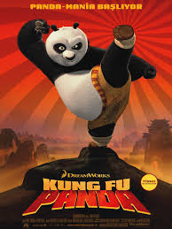
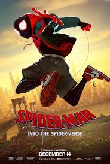

Animasyon Filmleri
Animasyon filmleri, hayal gücünün sınırlarını zorlayan görsel anlatımlarıyla hem çocuklara hem de yetişkinlere hitap eder. Renkli dünyaları ve duygusal derinliğiyle dikkat çeker.

Ejderhanı Nasıl Eğitirsin
Viking dünyasında geçen hikâyede, utangaç bir genç olan Hıçkırık, ejderhalarla savaşmak yerine onlarla dost olmayı seçer.

Kung Fu Panda
Kung Fu Panda
Yemek yemeye bayılan tembel panda Po, bir gün seçilmiş savaşçı olur ve kötü güçlere karşı dövüşmeyi öğrenir.

Örümcek-Adam: Örümcek Evreninde
Örümcek-Adam: Örümcek Evreninde
Farklı evrenlerden gelen Spider-Man'ler, genç Miles Morales ile birleşerek evrenler arası büyük bir tehdide karşı mücadele eder.